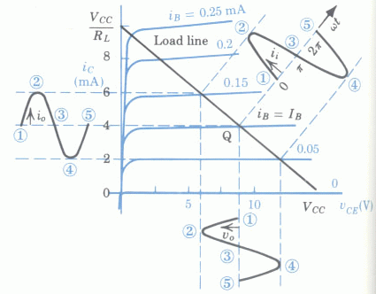

Next: Biasing Up: ch4 Previous: DC Operating Point
The common-emitter transistor circuit is commonly used for voltage amplification, as shown in the example below. Here we assume and , and .
The current and voltage on both input and output sides can be obtained either algebraically or graphically as shown below.
The input voltage and current

Assuming the transistor is properly biased so that
,
we get the input voltage
as the superposition
of DC component  and a small AC input
:
and a small AC input
:
| (22) |
Due to the small dynamic range () of the input voltage, the non-linear (approximately exponential) input characteristic can be linearized locally as a resistance, the reciprocal of the slope of the input characteristic curve around :
| (23) |
| (24) |
Why can't we get the base current in the following way?
| (25) |
The output voltage and current
The load line is the plot of equation , a straight line that goes through the two points:
| and | (26) |
| (27) |
| (28) |

Comparing the AC sinusoidal component
of
the input and the AC component
of the output,
we see that the CE transistor ircuit is a voltage amplifier by which
the input is amplified by
times. Also, the negative
sign indicates the output voltage (
) is  out of phase compared to that of the input signal (
),
i.e., the circuit is a reverse amplifier.
out of phase compared to that of the input signal (
),
i.e., the circuit is a reverse amplifier.
Waveform distortion
The waveform of the output may be distorted if the DC component
of the input voltage (and thereby, the base current  ) is
either too low or too high, causing either the positive or negative
peaks of the sinusoidal component to exceed the linear range of the
output characteristic plot, as illustrated below:
) is
either too low or too high, causing either the positive or negative
peaks of the sinusoidal component to exceed the linear range of the
output characteristic plot, as illustrated below:
We see that severe distortion in output will be caused if a transistor amplification circuit is working near either the cutoff or the saturation region. It is therefore desirable to properly set the DC operating point around the middle of the linear range along the load line, to avoid to be too close to either the saturation or cutoff region. Specifically,
needs to be large enough to avoid distortion due to the
nonlinearity of the input characteristics (close to the cutoff region);
and thereby
need to be small enough to avoid
distortion due to the nonlinearity of the output characteristics (close
to the saturation region).
Example
Assume
,
,  . Given the input voltage
or , find the corresponding output voltage
.
. Given the input voltage
or , find the corresponding output voltage
.
 ,
,
 ,
,
 . The transistor is cutoff (the switch is
open or open-circuit).
from the input characteristics, here assumed to be , and get
and
.
The transistor is in linear region.
from the input characteristics, here assumed to be . If the linear
relationship
were to hold, we would get
and
.
This result is obviously wrong, indicating that the transistor is actually
in the saturation region (the switch is closed or short-circuit),
i.e., the linear relation
does not hold. In fact, it is
impossible for the transistor to draw
from the voltage source,
as the maximum current is
when
. The transistor is cutoff (the switch is
open or open-circuit).
from the input characteristics, here assumed to be , and get
and
.
The transistor is in linear region.
from the input characteristics, here assumed to be . If the linear
relationship
were to hold, we would get
and
.
This result is obviously wrong, indicating that the transistor is actually
in the saturation region (the switch is closed or short-circuit),
i.e., the linear relation
does not hold. In fact, it is
impossible for the transistor to draw
from the voltage source,
as the maximum current is
when
 . In this case, the actual can be approximated on the output
characteristics to be about , the intersection of load line and the
curve corresponding to
), and
.
. In this case, the actual can be approximated on the output
characteristics to be about , the intersection of load line and the
curve corresponding to
), and
.